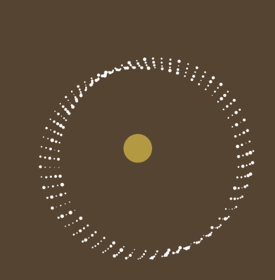

Put the ellipse with cos and sin for num, motion and speed.
Add circle in the middle that should work with "ellipse" than circle or sphere.
Change the background color randomly, and control the speed of change by "interval"
Also, the color of circle is changed ramdomly by "random()"

When change the number of the framecount for "cos", it will give you huge differences than "sin" changed
Finally, set the maxinum number of "a" properly. If the number is bigger, it will be more aggressive.